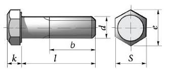

Болты с шестигранной головкой по ГОСТ 7798 и 7805
Краткое описание товара
Болты с шестигранной головкой применяются в машиностроении, приборостроении и строительстве в качестве деталей соединения.
Краткие характеристики
- Марки стали: 10кп, 20кп, 10, 20, 35, 20Г2Р, 40Х, 30ХР.
- Класс точности: B, A.
- Поле допуска резьбы: 6g.
- Класс прочности: 4,8; 5,8; 8,8; 10,9
Технические характеристики
| Параметры | Приложение №2 | ||||
| Номинальный диаметр d резьбы | 10 | 12 | 14 | 22 | |
| Размер S "под ключ" | 17 | 19 | 22 | 32 | |
| Размерный ряд, мм | 7-150 | 10-200 | 10-200 | 15-250 | |
| Dw не менее | 15.5 | 17.2 | 20.1 | 29.5 | |
| Теоретическая масса 1000 шт. болтов (исполнение 1) с крупным шагом резьбы, кг | 15.06 | 23.4 | 35.91 | 185.67 | |
Полное описание товара
Болты с шестигранной головкой являются основными крепежными изделиями при изготовлении оборудования, станков, бытовых приборов и различных металлоконструкций. С их помощью создаются прочные и надежные соединения, которые впоследствии можно быстро и легко разобрать. Стандартная конфигурация шестигранной головки позволяет закручивать болты вручную при помощи гаечных ключей и шестигранных головок. Для ускорения процесса сборки и разборки под шестигранные болты создано множество разнообразных приспособлений, такие как воротки, трещотки, электрические и пневматические гайковерты. Выпускаются болты с шестигранной головкой с метрической резьбой от М6 до М48, и длиной от 8 мм до 300 мм. Стандарт предусматривает выпуск данных метизов с мелкой и крупной (основной) резьбой. В зависимости от длины стержня резьба нарезается не полностью, что снижает его себестоимость и повышает прочность шпильки в целом.
ГОСТ 7805-70 ГОСТ 7798-70